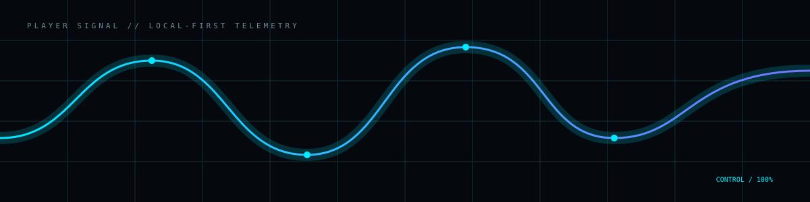

Library
Organize and launch games already available on your machine.
DISCOVER · LAUNCH · ORGANIZEVoidOne puts the player layer first: your library, your machine, your local data and the tools that help you keep playing.
Organize and launch games already available on your machine.
DISCOVER · LAUNCH · ORGANIZEKeep the machine visible when performance or compatibility becomes the problem.
CPU · GPU · RAM · RUNTIMEKeep saves and player state close to you instead of treating local data as an afterthought.
LOCAL · RESTORE · CONTROLSurface useful evidence when a game or runtime behaves unexpectedly.
LOGS · STATE · EVIDENCESupport multilingual and RTL experiences without making access a second-class feature.
LANGUAGE · ACCESSUse AI as a tool you control — not as a reason to surrender control of the platform.
OPTIONAL · LOCAL-FIRSTA player-facing platform should understand the environment around the game. VoidOne treats hardware and runtime evidence as part of the experience.

The player layer can hand off to deeper system and intelligence surfaces when the normal launch path stops being normal.
Architecture, runtime boundaries, hardware context and public project signals.
Open System ↗Optional AI workflows for troubleshooting, explanation and localization — clearly separated from the core.
Open Intelligence ↗Download the current release or explore how VoidOne is built.